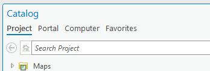
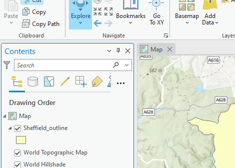
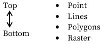
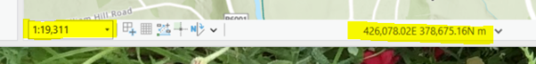
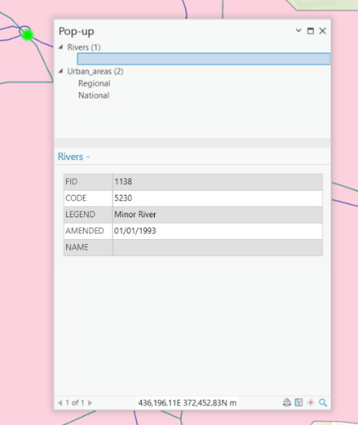
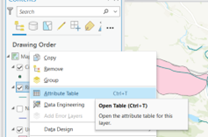
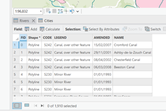

Intro_to_Pro
Intro to ArcPro
We are now going to explore the ArcGIS Pro interface.

| Component | Description |
|---|---|
| 1. Project menu | Provides access to application settings and other configurable properties. |
| 2. The ribbon | Organizes tools on a series of tabs. These are context dependent so will change depending on the type of data being used, for example |
| 3. The command search box | Helps you find and open geoprocessing tools and run user interface commands. You can also access help topics related to your search terms. |
| 4. The Contents panel | Displays layers related to the active view, which may be a map, a scene, or a layout, for example. |
| 5. Map and Table view | Views, such as the map in this example, are the primary work areas in ArcGIS Pro. Tables and Map Layouts are also viewed here. |
|
items in a project can be managed in the Catalog pane. |
We’ll look at some of these elements in more detail now.
1.1.1 The Catalog pane
By default, you will see the contents of your current Project in the Catalog pane.
ArcGIS Pro organizes your work into projects. A project is a collection of related items: maps, layouts, tables, charts, data connections, and more, and is designed to be self-contained.
By default, a project and its associated files are stored together in one project folder. This makes projects easy to find and also means that project resources don’t become detached from the project and lost. They are also efficient so they contain only the items and data connections required for the project.
The project file (with the extension .aprx) is stored on your computer within the project folder, alongside some additional files like the default geodatabase (with the extension .gdb). When you run geoprocessing tools in your project, the output data is stored in this geodatabase (unless otherwise specified).
The Catalog pane has four tabs:

The Project tab is a tree view of the items you have added to a project or created in a project, organized by type. For example, maps you have imported or created appear under the Maps container. Projects are set up with a default structure but will have no data within them yet.
The Portal tab lists items in your active portal, this is online data that has been shared by or with your organisation. For example, this might allow you to access layers from the ArcGIS Living Atlas of the World or layers created and shared by other users at the University of Sheffield (you may need to log into access these).
The Computer tab displays the items on your computer in the same way as the File Explorer. On this tab, you can access and manage folders and files without needing to create folder connections.
The Favorites tab lists items you have designated as project favorites.
1.1.2 The Contents panel
The Contents pane lists layers, tables and other elements in a map. You use this pane to manage the display of layers and tables within your project, control their properties, and organize them into groups.

Any data layers that you add to ArcGIS Pro will show up in the Contents. Here you can:
Turn the layers on or off using the tick box to the left of each layer
See the name of the layers in your project
See the symbol used to represent the data in the Map View
See a range of data values (if relevant)
See - and change - the order that the layers are displayed in.
ArcPro, in common with most other GIS programs, arranges map data in ‘layers’. You can think of layers as physical map sheets, stacked on top on each other
The layers are visible in the Contents, which is usually on the left hand side of the window. Layers are listed in Drawing Order by default which means the order in which the layers are displayed in the map is indicated by the order of the layers in the Contents panel.
The layer at the top of the Contents is the layer that is drawn on the top or front of the map. You can click on the layer in the Contents and drag its position up or down the order. Layers that are under another layer may be partially or fully obscured if they have data in the same location.
As a rule, layers should be ordered according to data type:

1.1.5 Map scale and coordinates
Another useful tool in ArcPro is the Map Scale, this is found on the toolbar at the bottom of the Map view. It will display the current scale of the map view. You can change this scale by clicking in the scale drop down box and selecting a pre-set value or by typing in your own value (e.g. 10000 for 1:10000) and pressing return.

Coordinates (and optionally units) for the map are also displayed in the bottom toolbar of the Map view. These update as you move the mouse over the map view, so that the coordinates for the location of the mouse pointer are always displayed.
1.1.6 Identify

Left-clicking the Explore tool allows you to query the spatial data displayed on the map by clicking on the map directly. The identify window (shown here) opens to display the results. It will show the attributes of features for different layers at that location. You can limit the layers that you are querying by selecting from the Explore drop-down box in the ribbon. Here you can choose to display information from all layers which occur at the location you have clicked on, or individual layers if you are looking for something specific.
1.1.7 The Attribute Table
A really important part of vector data layers is the attribute table. Each vector datasets - like the ones we have added so far – have an attribute table associated with them which stores all the relevant attributes associated with each feature of the dataset. We can easily explore these in ArcPro.
An attribute table contains non-spatial information about the geographic features used in a GIS, and is linked to those feature by a unique identifier. In ArcGIS, each row represents a feature (e.g. a river) and each column represents an attribute of the data (e.g. the type of a road, the number of carriageways, the speed limit).
To see the attribute data which is associated with each spatial feature of the different data layers you can open a layer’s attribute table. This is the data that is returned when querying the map with the identify tool.
To open the attribute table for a layer, right click on the layer in the Contents and select Attribute Table from the right click menu.

The attribute table will open and resemble a spread sheet in format. You can scroll around the table if the data doesn’t fit in the window. You can also move, dock and undock the table window which will allow you to resize it (you can do this with any of the windows in ArcPro, e.g. Contents, Catalog, Identify).

If you open multiple attribute tables at once, they will open up in the same Table window and can be navigated between by using the tabs at the top of the Table window.